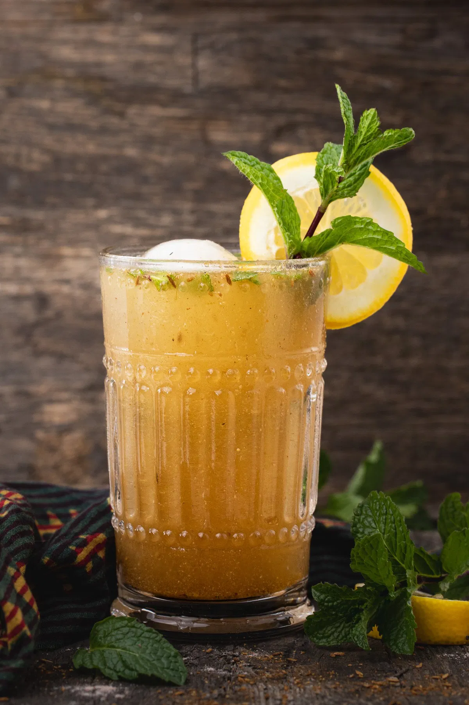

Cold Coffee
- 1 cup chilled milk
- 2 tsp instant coffee powder
- 1 tbsp sugar
- Ice cubes
- 2 tbsp vanilla ice cream (optional)
Ingredients :
- Blend coffee powder, sugar, and a little milk to dissolve.
- add remaining milk and ice cubes, blend again.
- Pour in glass, top with ice cream if desired. Serve cold.
Making Process :

Masala Soda
- 1 cup chilled soda water
- 1 tbsp lemon juice
- 1/4 tsp chaat masala
- 1/4 tsp black salt
- A pinch of roasted cumin powder
- Ice cubes
- Mint leaves for garnish
Ingredients :
- Mix lemon juice, chaat masala, black salt, and cumin powder.
- Add soda water and ice cubes. Stir gently.
- Garnish with mint leaves and serve immediately.